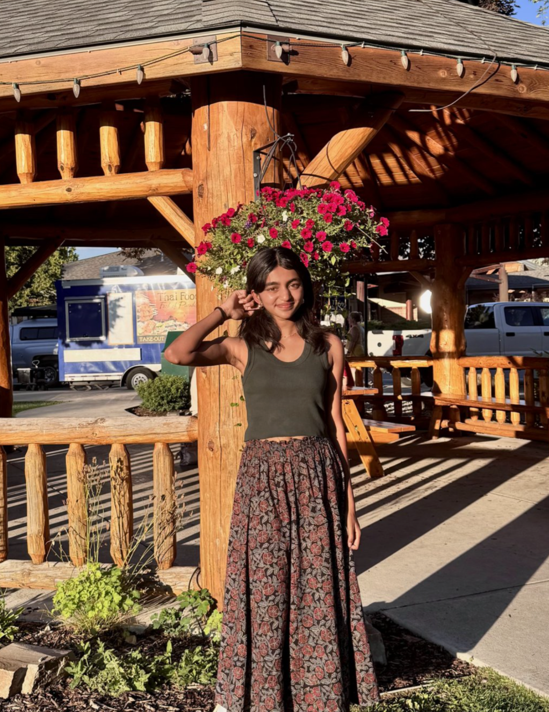
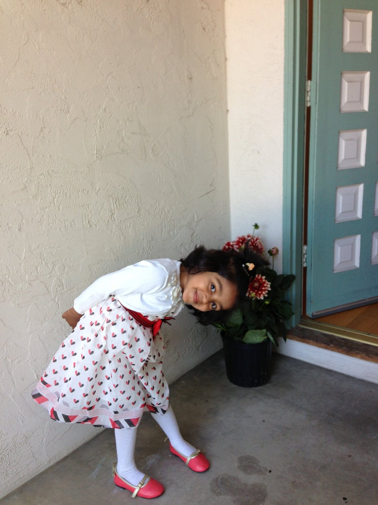

About Me
My art journey — who I am, what I care about, and my favorite mediums!




Hey, I'm Poorva!
I'm a high school student living in the Bay Area and art is one of my many passions. I also love playing tennis, debating, watching murder mysteries, and exploring new cafes. I would consider myself a mixed-media artist, however, I'm most comfortable with graphite and marker.
I grew up filling my notebook margins with doodles, and that habit never really stopped. These days, my inspiration for my pieces comes from everyday objects, city scenes, family pictures, and abstract designs.
What I love working with
- Graphite, ink and colored pencil for detailed line work
- Gouache and acrylic: I rarely paint but I love the boldness of the colors
- Collage - I've been experimenting with layering more recently
When I’m not drawing, you can find me at Michaels, which is my FAVORITE place in the world. I hope this page gave you a little glimpse of who I am!